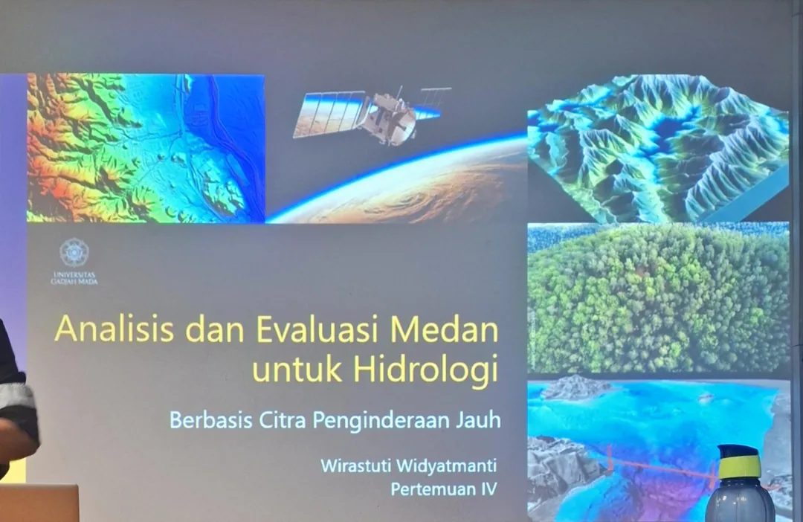

Analisis dan Evaluasi Medan Berbasis Citra
Semua slide dari PDF disusun ulang menjadi web belajar interaktif. Tiap slide memiliki gambar asli, terjemahan isi, dan penjelasan visual supaya mudah diulang sebelum ujian.
Bagian pertama membahas hidrologi berbasis topografi. Bagian kedua membahas evaluasi tanah dan lahan. Bagian tambahan berisi hierarki medan, variabel medan, indeks DEM, nature-based solution, dan tugas akhir.

Flashcard cepat
Gunakan untuk mengulang poin yang sering keluar saat ujian.
Apa inti hubungan topografi dan hidrologi?
Topografi mengontrol arah aliran air, infiltrasi, limpasan, pengisian air tanah, evapotranspirasi, dan pembentukan jaringan sungai.
Mengapa DEM sangat penting?
DEM adalah sumber utama untuk menurunkan slope, aspect, curvature, flow accumulation, batas DAS, dan berbagai indeks topografi turunan.
Apa beda TWI dan SPI?
TWI menilai kecenderungan kejenuhan air, sedangkan SPI menilai kekuatan aliran dalam mengerosi atau mengangkut sedimen.
Apa fungsi SAR pada banjir?
SAR dapat melihat saat malam dan menembus awan, sehingga sangat berguna untuk mendeteksi genangan banjir aktif.
Apa pengaruh material induk pada tanah?
Material induk memengaruhi tekstur, warna, hara, porositas, drainase, dan perkembangan horizon tanah.
Apa arti Hydrologic Soil Group A sampai D?
A berinfiltrasi cepat dan runoff rendah, sedangkan D infiltrasi lambat dan runoff tinggi.
Apa itu nature based solution?
Pendekatan konservasi/restorasi yang meniru atau mengikuti proses alam, bukan hanya pendekatan teknis manusia.
Mengapa aspect penting?
Aspect mengubah penerimaan radiasi matahari, suhu permukaan, penguapan, dan kelembapan tanah.
Apa itu rain shadow?
Daerah kering di sisi bayangan hujan pegunungan karena uap air sudah banyak dilepas di sisi windward.
Apa isi tugas pada slide terakhir?
Mencari indeks topografi lain, lalu menulis definisi, rumus, parameter, dan aplikasi ke dalam format PowerPoint/email.
Soal Tahun Lalu
Ditambahkan ke bagian paling bawah sesuai permintaan, lengkap dengan jawaban dan gambar pendukung di folder pages.
Nomor 1 — Pengaruh topografi terhadap hidrologi dan flora
Dalam prinsip dasar analisis medan, terdapat prinsip penting dalam memahami karakteristik topografi, dan bagaimana karakteristik ini berpengaruh terhadap aspek lain di sebuah medan di permukaan bumi. Jelaskan dua contoh pengaruh karakteristik topografi terhadap salah satu aspek lingkungan dalam sebuah medan di permukaan bumi dalam bentuk diagram alir detail. Saya ingin nomor 1 adalah pengaruh topografi terhadap hidrologi dan flora.


Nomor 2 — Implementasi solar insolation untuk kesesuaian lahan ubi kayu
Salah satu atribut topografi primer yang dapat diperoleh dari data DEM adalah solar insolation. Sebutkan satu contoh implementasi atribut tersebut dalam perencanaan tata ruang atau pemetaan kesesuaian lahan menggunakan prinsip analisis medan, dan jelaskan dalam bentuk diagram alir detail. Saya ingin contohnya untuk pemetaan kesesuaian lahan ubi kayu.